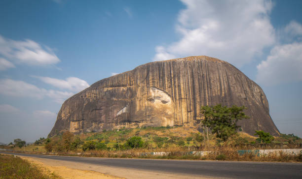
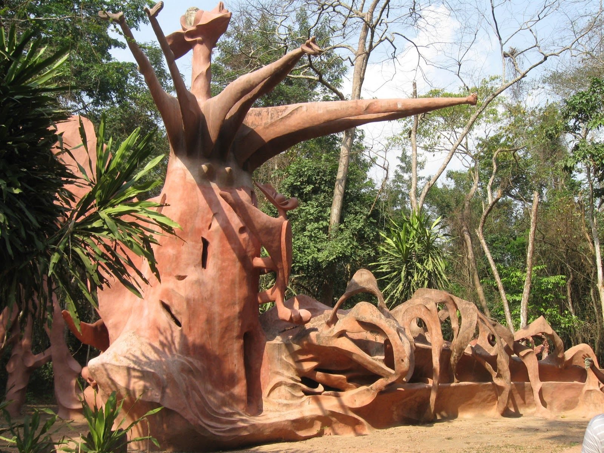

Landmarks
Discover Nigeria's breathtaking landmarks, each telling a story of the nation's history, culture, and natural beauty.

Zuma Rock
Known as the "Gateway to Abuja," Zuma Rock is a magnificent monolith that stands as a symbol of Nigeria's natural beauty.

Yankari National Park
Explore wildlife and natural hot springs in one of Nigeria's most famous reserves.

Osun-Osogbo Sacred Grove
A UNESCO World Heritage Site, this grove is a spiritual sanctuary and a symbol of Yoruba heritage.
Aso Rock
Located in Abuja, Aso Rock is a prominent geological feature that serves as a backdrop to the Nigerian capital's iconic structures.